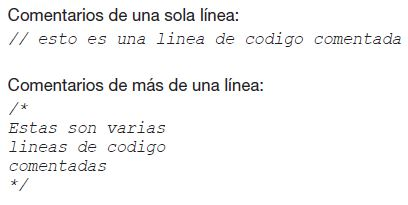

Desarrollaremos un programa Java que escribe la frase "Hola Mundo !!!" en la consola (pantalla).
COMENCEMOS A PROGRAMAR
Un programa Java es una clase (class) que contiene el método (o función) main. Este método tiene que ser definido con los modificadores public, static, void y debe recibir un String[] como parámetro. Los bloques de código se delimitan con { } (llaves) y las sentencias finalizan con ; (punto y coma). Podemos ver también que el programa comienza definiendo un package. Por último, con System.out.println escribimos el texto que vamos a mostrar en la consola. En Java siempre codificamos clases y cada clase debe estar contenida dentro de un archivo de texto con el mismo nombre que la clase y con extensión .java. Así, nuestro programa debe estar codificado en un archivo llamado HolaMundo.java (respetando mayúsculas y minúsculas).
ESTRUCTURAS DE CONTROL
A continuación, analizaremos una serie de programas simples que nos ayudarán a ver cómo definir variables, cómo utilizar estructuras de decisión, estructuras iterativas, cómo comentar código, etcétera.
Entrada y salida de datos por consola.
Llamamos “consola” al conjunto compuesto por la pantalla (en modo texto) y el teclado de la computadora donde se ejecutará nuestro programa. Así, cuando hablemos de “ingreso de datos por consola” nos estaremos refiriendo al teclado y cuando hablemos de “mostrar datos por consola” nos referiremos a la pantalla (siempre en modo texto). El siguiente programa pide al usuario que ingrese su nombre, lee el dato por teclado y luego lo muestra en la consola.

La clase Scanner permite leer datos a través del teclado.
Luego mostramos un mensaje indicando al usuario que debe ingresar su nombre a través del teclado. A continuación, leemos el nombre que el usuario vaya a ingresar y lo almacenamos en la variable nom. Por último, mostramos un mensaje compuesto por un texto literal "Hola Mundo: " seguido del valor contenido en la variable nom.
Notemos la diferencia entre: System.out.print y System.out.println. El primero imprime en la consola el valor del argumento que le pasamos. El segundo hace lo mismo, pero agrega un salto de línea al final.
Definición de variables y Comentarios en el código.
Podemos definir variables en cualquier parte del código simplemente indicando el tipo de datos y el nombre de la variable (identificador).
Java soporta comentarios in-line (de una sola línea) y comentarios de varias líneas.
Ejemplo: El siguiente programa pide al usuario que ingrese su nombre, edad y altura. Estos datos deben ingresarse separados por un espacio en blanco. Luego los muestra por consola.
Este ejemplo ilustra el uso de datos de diferentes tipos: String, int y double. También muestra que podemos definir variables en cualquier parte del código fuente (igual que en C++) y, por último, muestra cómo concatenar datos de diferentes tipos para emitir la salida del programa.
Estructuras de decisión.
En Java disponemos de tres estructuras de decisión o estructuras condicionales:
Decisión simple: if
Decisión múltiple: switch
Decisión in-line: a>b ? "a es Mayor" : "a es Menor".
Comenzaremos analizando la sentencia if cuya estructura es la siguiente:
if( condición )
{
accion1;
} else {
accion2;
}
Ejemplo: ¿es mayor de 21 años? En el siguiente ejemplo, utilizamos un if para determinar si el valor (edad) ingresado por el usuario es mayor o igual que 21.
El if in-line tiene la siguiente estructura:
condicion ? retornoPorTrue : retornoPorFalse;
Lo anterior debe leerse de la siguiente manera: si se verifica la condición entonces se retorna la expresión ubicada entre el ? (signo de interrogación) y los : (dos puntos). Si la condición resulta falsa entonces se retorna la expresión ubicada después de los : (dos puntos).
Ejemplo: ¿es par o impar? (utilizando if in-line)
Utilizando un if in-line, la estructura if-else se reemplazaría por una sola instrucción.
String mssg = (resto == 0 ) ? "es Par": "es Impar";
La decisión múltiple Switch tiene la siguiente estructura:
switch( variableEntera )
{
case valor1:
accionA;
accionB;
:
break;
case valor2:
accionX;
accionY;
:
break;
:
default:
masAcciones;
}
Dependiendo del valor de variableEntera, el programa ingresará por el case, cuyo valor coincide con el de la variable.
Se ejecutarán todas las acciones desde ese punto hasta el final, salvo que se encuentre una sentencia break que
llevará al control del programa hasta la llave que cierra el switch. Por este motivo (al igual que en C), es muy
importante recordar poner siempre el break al finalizar cada case.
Como vemos, el switch permite decidir entre diferentes opciones (siempre deben ser numéricas).
Dependiendo de cuál sea el valor ingresado por el usuario el programa optará por el case correspondiente. En caso de
que el usuario haya ingresado un valor para el cual no hemos definido ningún case entonces el programa ingresará por
default.
Notemos también que utilizamos la sentencia break para finalizar cada case. Esto es muy importante ya que si no la
utilizamos, el programa, luego de entrar al case correspondiente, seguirá secuencialmente ejecutando todas las
sentencias posteriores. Si el lector conoce algo de lenguaje C, esto no le llamará la atención ya que funciona
exactamente igual.
Estructuras iterativas.
Disponemos de tres estructuras iterativas: el while, el do-while y el for. Nuevamente, para aquellos que conocen lenguaje C estas instrucciones son idénticas.
Comencemos por analizar el uso del while cuya estructura es la siguiente:
while( condición ) {
acción1;
acción2;
:
}
El ciclo itera mientras la condición resulte verdadera.
Ejemplo: El siguiente programa utiliza un while para mostrar los primeros n números naturales.
El usuario ingresa el valor de n por teclado.
Vemos que el ciclo while itera mientras que el valor de i sea menor o igual que el valor de n (que fue ingresado por
teclado). Por cada iteración mostramos el valor de la variable i y luego la incrementamos.
Analicemos el ciclo do-while cuya estructura es la siguiente:
do {
acción1;
acción2;
:
} while( condición );
Este ciclo también itera mientras se verifique la condición, pero a diferencia del ciclo anterior en este caso la entrada al ciclo no está condicionada; por lo tanto, las acciones encerradas entre el do y el while se ejecutarán al menos una vez.
Por último, veremos el ciclo for cuya estructura es la siguiente:
for( inicialización; condición; incremento ) {
acción1;
acción2;
:
}
Este ciclo tiene tres secciones separadas por ; (punto y coma). En la primera sección, se define e inicializa una variable entera que llamaremos variable de control. En la segunda sección, se especifica una condición lógica que (frecuentemente) estará en función de esta variable. En la tercera sección, se define el incremento de la variable de control.
Ejemplo: muestra sencilla de la estructura de un ciclo for.
Copyright©2024
Todos los derechos reservados. Sabaneta, Antioquia.
By A&D Soft